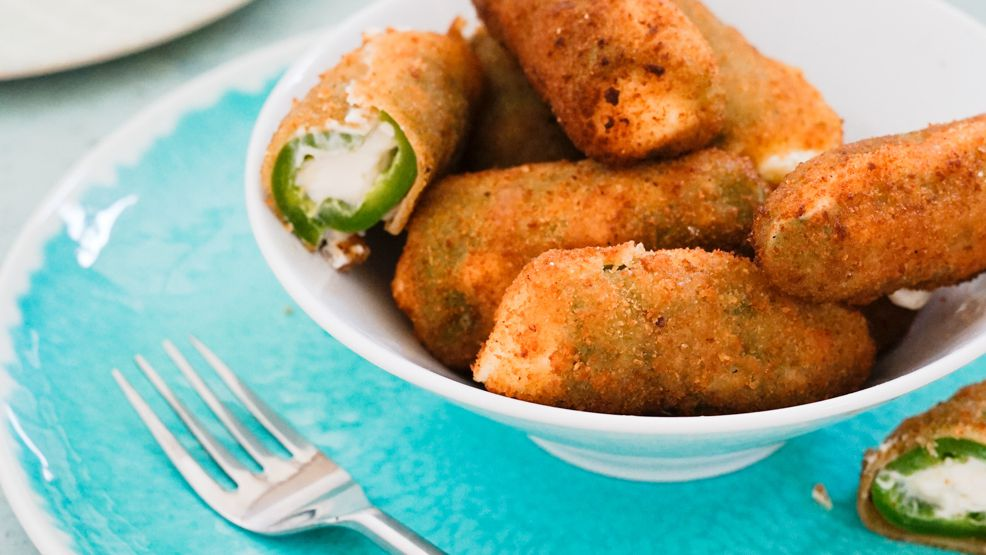

Back to All Recipes
Jalapeno Poppers

Sharp Cheddar cheese is the rich, delicious filling for these spicy favorites! They are baked rather than deep fried. You'll want to pop them down one after another!
Jalapeno Poppers are my obsession! Fresh Jalapenos are sliced in half and filled with a rich creamy cheese filling and topped with a crisp Panko topping. These poppers are baked until golden and bubbly for the perfect game day snack
Ingredients
- 1 (8 ounce) package cream cheese, softened
- 1 (8 ounce) package shredded sharp Cheddar cheese
- ¼ cup mayonnaise
- 15 fresh jalapeno peppers, halved lengthwise and seeded
- 2 eggs, beaten
- ½ tablespoon milk
- 1 ½ cups crushed corn flake cereal
Steps
- Preheat oven to 350 degrees F (175 degrees C). Lightly grease a medium baking sheet.
- In a medium bowl, mix together cream cheese, sharp Cheddar cheese and mayonnaise. Stuff jalapeno halves with the mixture.
- Whisk together eggs and milk in a small bowl. Place crushed corn flake cereal in a separate small bowl.
- Dip each stuffed jalapeno half into the egg and milk mixture, then roll in corn flake cereal to coat.
- Arrange in a single layer on the prepared baking sheet. Bake in the preheated oven 30 minutes, or until filling is bubbly and lightly browned.